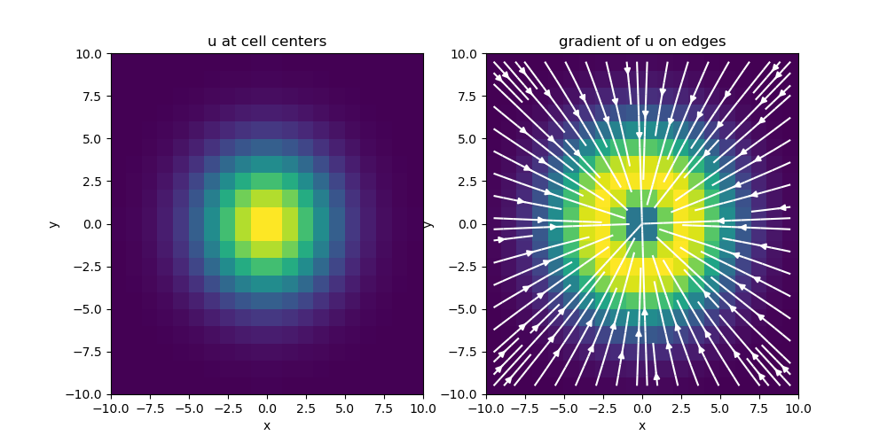
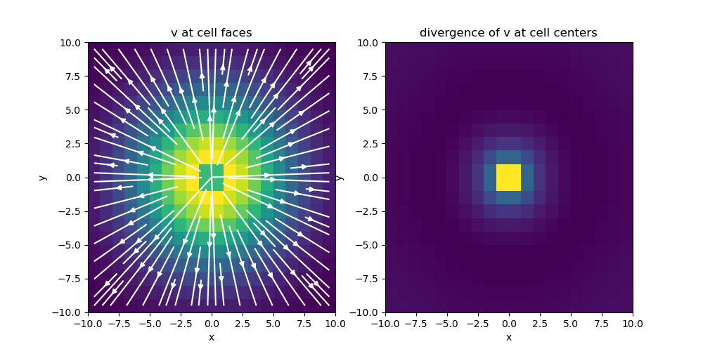
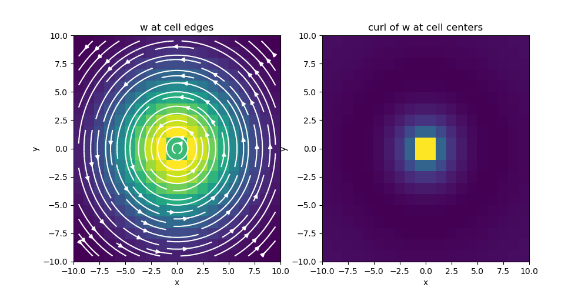

Note
Click here to download the full example code
Differential Operators¶
For discretized quantities living on a mesh, sparse matricies can be used to approximate the following differential operators:
- gradient: \(\nabla \phi\)
- divergence: \(\nabla \cdot \mathbf{v}\)
- curl: \(\nabla \times \mathbf{v}\)
- scalar Laplacian: \(\Delta \mathbf{v}\)
Numerical differential operators exist for 1D, 2D and 3D meshes. For each mesh class (Tensor mesh, Tree mesh, Curvilinear mesh), the set of numerical differential operators are properties that are only constructed when called.
Here we demonstrate:
- How to construct and apply numerical differential operators
- Mapping and dimensions
- Applications for the transpose
Import Packages¶
Here we import the packages required for this tutorial.
from discretize import TensorMesh, TreeMesh
import matplotlib.pyplot as plt
import numpy as np
# sphinx_gallery_thumbnail_number = 2
1D Example¶
Here we compute a scalar function on cell nodes and differentiate with respect to x. We then compute the analytic derivative of function to validate the numerical differentiation.
# Create a uniform grid
h = np.ones(20)
mesh = TensorMesh([h], 'C')
# Get node and cell center locations
x_nodes = mesh.vectorNx
x_centers = mesh.vectorCCx
# Compute function on nodes and derivative at cell centers
v = np.exp(-(x_nodes**2) / 4**2)
dvdx = -(2*x_centers / 4**2)*np.exp(-(x_centers**2) / 4**2)
# Derivative in x (gradient in 1D) from nodes to cell centers
G = mesh.nodalGrad
dvdx_approx = G*v
# Compare
fig = plt.figure(figsize=(12, 4))
ax1 = fig.add_axes([0.03, 0.01, 0.3, 0.89])
ax1.spy(G, markersize=5)
ax1.set_title('Sparse representation of G', pad=10)
ax2 = fig.add_axes([0.4, 0.06, 0.55, 0.85])
ax2.plot(x_nodes, v, 'b-',
x_centers, dvdx, 'r-',
x_centers, dvdx_approx, 'ko'
)
ax2.set_title('Comparison plot')
ax2.legend(('function', 'analytic derivative', 'numeric derivative'))
fig.show()
Out:
/home/travis/build/simpeg/discretize/tutorials/operators/2_differential.py:80: UserWarning: Matplotlib is currently using agg, which is a non-GUI backend, so cannot show the figure.
fig.show()
Mapping and Dimensions¶
When discretizing and solving differential equations, it is natural for certain quantities to be defined at particular locations on the mesh; e.g.:
- Scalar quantities on nodes or at cell centers
- Vector quantities on cell edges or on cell faces
As such, numerical differential operators frequently map from one part of the mesh to another. For example, the gradient acts on a scalar quantity an results in a vector quantity. As a result, the numerical gradient operator may map from nodes to edges or from cell centers to faces.
Here we explore the dimensions of the gradient, divergence and curl operators for a 3D tensor mesh. This can be extended to other mesh types.
# Create a uniform grid
h = np.ones(20)
mesh = TensorMesh([h, h, h], 'CCC')
# Get differential operators
GRAD = mesh.nodalGrad # Gradient from nodes to edges
DIV = mesh.faceDiv # Divergence from faces to cell centers
CURL = mesh.edgeCurl # Curl edges to cell centers
fig = plt.figure(figsize=(9, 8))
ax1 = fig.add_axes([0.07, 0, 0.20, .7])
ax1.spy(GRAD, markersize=0.5)
ax1.set_title('Gradient (nodes to edges)')
ax2 = fig.add_axes([0.345, 0.73, 0.59, 0.185])
ax2.spy(DIV, markersize=0.5)
ax2.set_title('Divergence (faces to centers)', pad=20)
ax3 = fig.add_axes([0.31, 0.05, 0.67, 0.60])
ax3.spy(CURL, markersize=0.5)
ax3.set_title('Curl (edges to faces)')
fig.show()
# Print some properties
print('\n Gradient:')
print('- Number of nodes:', str(mesh.nN))
print('- Number of edges:', str(mesh.nE))
print('- Dimensions of operator:', str(mesh.nE), 'x', str(mesh.nN))
print('- Number of non-zero elements:', str(GRAD.nnz), '\n')
print('Divergence:')
print('- Number of faces:', str(mesh.nF))
print('- Number of cells:', str(mesh.nC))
print('- Dimensions of operator:', str(mesh.nC), 'x', str(mesh.nF))
print('- Number of non-zero elements:', str(DIV.nnz), '\n')
print('Curl:')
print('- Number of faces:', str(mesh.nF))
print('- Number of edges:', str(mesh.nE))
print('- Dimensions of operator:', str(mesh.nE), 'x', str(mesh.nF))
print('- Number of non-zero elements:', str(CURL.nnz))
Out:
/home/travis/build/simpeg/discretize/tutorials/operators/2_differential.py:127: UserWarning: Matplotlib is currently using agg, which is a non-GUI backend, so cannot show the figure.
fig.show()
Gradient:
- Number of nodes: 9261
- Number of edges: 26460
- Dimensions of operator: 26460 x 9261
- Number of non-zero elements: 52920
Divergence:
- Number of faces: 25200
- Number of cells: 8000
- Dimensions of operator: 8000 x 25200
- Number of non-zero elements: 48000
Curl:
- Number of faces: 25200
- Number of edges: 26460
- Dimensions of operator: 26460 x 25200
- Number of non-zero elements: 100800
2D Example¶
Here we apply the gradient, divergence and curl operators to a set of functions defined on a 2D tensor mesh. We then plot the results.
# Create a uniform grid
h = np.ones(20)
mesh = TensorMesh([h, h], 'CC')
# Get differential operators
GRAD = mesh.nodalGrad # Gradient from nodes to edges
DIV = mesh.faceDiv # Divergence from faces to cell centers
CURL = mesh.edgeCurl # Curl edges to cell centers (goes to faces in 3D)
# Evaluate gradient of a scalar function
nodes = mesh.gridN
u = np.exp(-(nodes[:, 0]**2 + nodes[:, 1]**2) / 4**2)
grad_u = GRAD*u
# Evaluate divergence of a vector function in x and y
faces_x = mesh.gridFx
faces_y = mesh.gridFy
vx = (
(faces_x[:, 0]/np.sqrt(np.sum(faces_x**2, axis=1))) *
np.exp(-(faces_x[:, 0]**2 + faces_x[:, 1]**2) / 6**2)
)
vy = (
(faces_y[:, 1]/np.sqrt(np.sum(faces_y**2, axis=1))) *
np.exp(-(faces_y[:, 0]**2 + faces_y[:, 1]**2) / 6**2)
)
v = np.r_[vx, vy]
div_v = DIV*v
# Evaluate curl of a vector function in x and y
edges_x = mesh.gridEx
edges_y = mesh.gridEy
wx = (
(-edges_x[:, 1]/np.sqrt(np.sum(edges_x**2, axis=1))) *
np.exp(-(edges_x[:, 0]**2 + edges_x[:, 1]**2) / 6**2)
)
wy = (
(edges_y[:, 0]/np.sqrt(np.sum(edges_y**2, axis=1))) *
np.exp(-(edges_y[:, 0]**2 + edges_y[:, 1]**2) / 6**2)
)
w = np.r_[wx, wy]
curl_w = CURL*w
# Plot Gradient of u
fig = plt.figure(figsize=(10, 5))
ax1 = fig.add_subplot(121)
mesh.plotImage(u, ax=ax1, vType='N')
ax1.set_title('u at cell centers')
ax2 = fig.add_subplot(122)
mesh.plotImage(grad_u, ax=ax2, vType='E', view='vec',
streamOpts={'color': 'w', 'density': 1.0})
ax2.set_title('gradient of u on edges')
fig.show()
# Plot divergence of v
fig = plt.figure(figsize=(10, 5))
ax1 = fig.add_subplot(121)
mesh.plotImage(v, ax=ax1, vType='F', view='vec',
streamOpts={'color': 'w', 'density': 1.0})
ax1.set_title('v at cell faces')
ax2 = fig.add_subplot(122)
mesh.plotImage(div_v, ax=ax2)
ax2.set_title('divergence of v at cell centers')
fig.show()
# Plot curl of w
fig = plt.figure(figsize=(10, 5))
ax1 = fig.add_subplot(121)
mesh.plotImage(w, ax=ax1, vType='E', view='vec',
streamOpts={'color': 'w', 'density': 1.0})
ax1.set_title('w at cell edges')
ax2 = fig.add_subplot(122)
mesh.plotImage(curl_w, ax=ax2)
ax2.set_title('curl of w at cell centers')
fig.show()
- 
- 
- 
Out:
/home/travis/build/simpeg/discretize/tutorials/operators/2_differential.py:217: UserWarning: Matplotlib is currently using agg, which is a non-GUI backend, so cannot show the figure.
fig.show()
/home/travis/build/simpeg/discretize/tutorials/operators/2_differential.py:231: UserWarning: Matplotlib is currently using agg, which is a non-GUI backend, so cannot show the figure.
fig.show()
/home/travis/build/simpeg/discretize/tutorials/operators/2_differential.py:245: UserWarning: Matplotlib is currently using agg, which is a non-GUI backend, so cannot show the figure.
fig.show()
Tree Mesh Divergence¶
For a tree mesh, there needs to be special attention taken for the hanging faces to achieve second order convergence for the divergence operator. Although the divergence cannot be constructed through Kronecker product operations, the initial steps are exactly the same for calculating the stencil, volumes, and areas. This yields a divergence defined for every cell in the mesh using all faces. There is, however, redundant information when hanging faces are included.
mesh = TreeMesh([[(1, 16)], [(1, 16)]], levels=4)
mesh.insert_cells(np.array([5., 5.]), np.array([3]))
mesh.number()
fig = plt.figure(figsize=(10, 10))
ax1 = fig.add_subplot(211)
mesh.plotGrid(cells=True, nodes=False, ax=ax1)
ax1.axis('off')
ax1.set_title('Simple QuadTree Mesh')
ax1.set_xlim([-1, 17])
ax1.set_ylim([-1, 17])
for ii, loc in zip(range(mesh.nC), mesh.gridCC):
ax1.text(loc[0]+0.2, loc[1], '{0:d}'.format(ii), color='r')
ax1.plot(mesh.gridFx[:, 0], mesh.gridFx[:, 1], 'g>')
for ii, loc in zip(range(mesh.nFx), mesh.gridFx):
ax1.text(loc[0]+0.2, loc[1], '{0:d}'.format(ii), color='g')
ax1.plot(mesh.gridFy[:, 0], mesh.gridFy[:, 1], 'm^')
for ii, loc in zip(range(mesh.nFy), mesh.gridFy):
ax1.text(
loc[0]+0.2, loc[1]+0.2, '{0:d}'.format(
(ii+mesh.nFx)
),
color='m'
)
ax2 = fig.add_subplot(212)
ax2.spy(mesh.faceDiv)
ax2.set_title('Face Divergence')
ax2.set_ylabel('Cell Number')
ax2.set_xlabel('Face Number')

Vector Calculus Identities¶
Here we show that vector calculus identities hold for the discrete differential operators. Namely that for a scalar quantity \(\phi\) and a vector quantity \(\mathbf{v}\):
We do this by computing the CURL*GRAD and DIV*CURL matricies. We then plot the sparse representations and show neither contain any non-zero entries; e.g. each is just a matrix of zeros.
# Create a mesh
h = 5*np.ones(20)
mesh = TensorMesh([h, h, h], 'CCC')
# Get operators
GRAD = mesh.nodalGrad # nodes to edges
DIV = mesh.faceDiv # faces to centers
CURL = mesh.edgeCurl # edges to faces
# Plot
fig = plt.figure(figsize=(11, 7))
ax1 = fig.add_axes([0.12, 0.1, 0.2, 0.8])
ax1.spy(CURL*GRAD, markersize=0.5)
ax1.set_title('CURL*GRAD')
ax2 = fig.add_axes([0.35, 0.64, 0.6, 0.25])
ax2.spy(DIV*CURL, markersize=0.5)
ax2.set_title('DIV*CURL', pad=20)
Total running time of the script: ( 0 minutes 3.146 seconds)